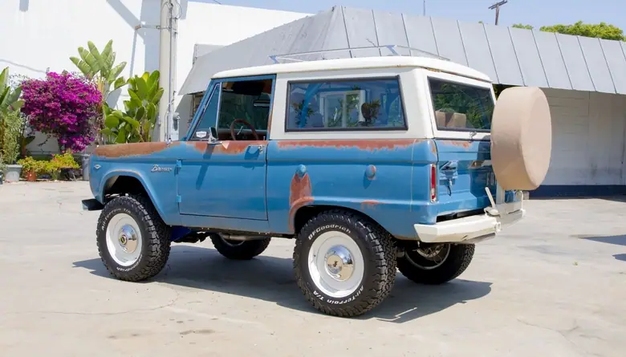
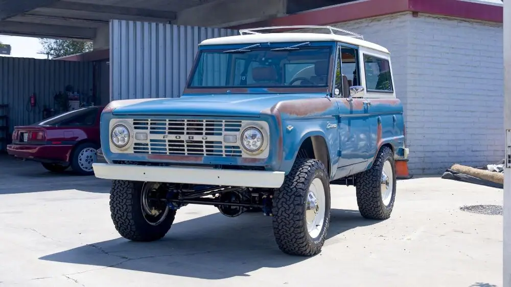
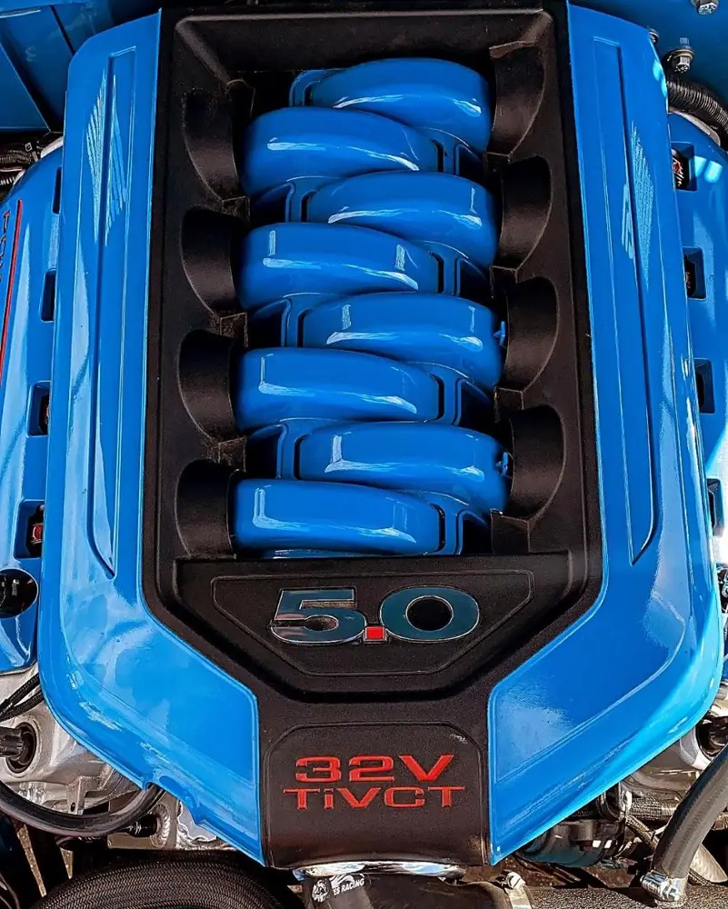
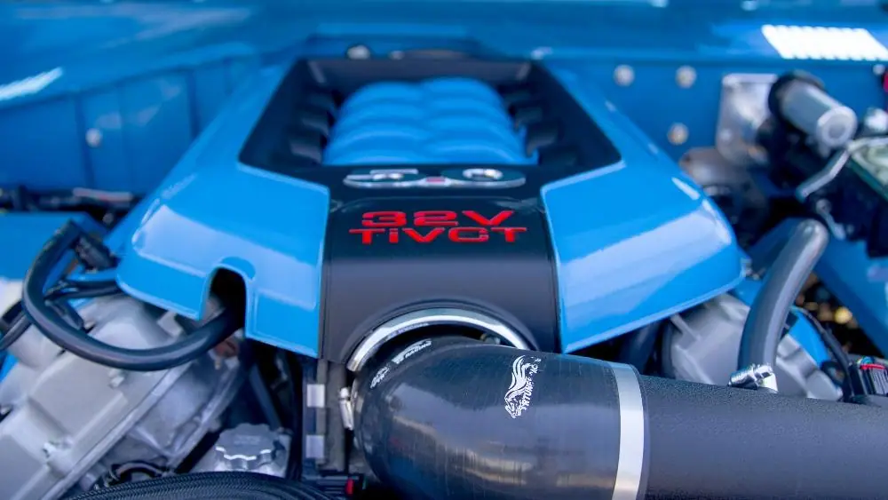
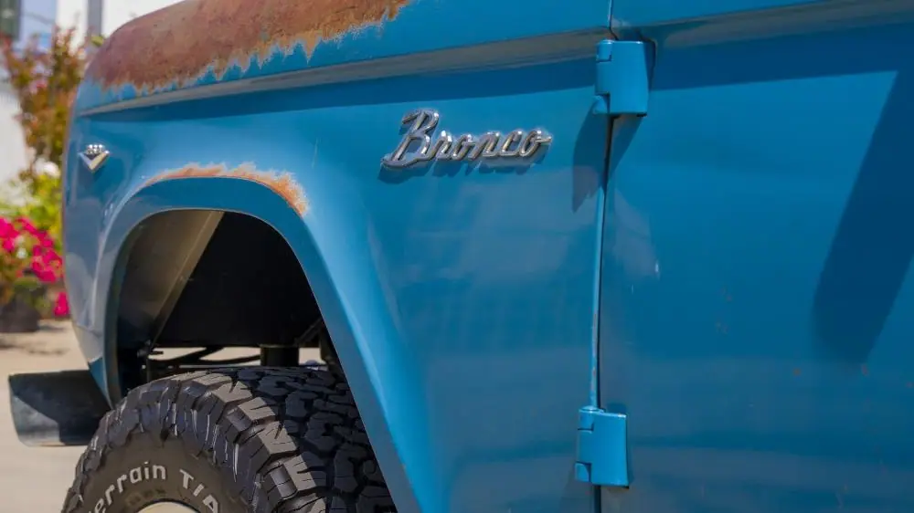
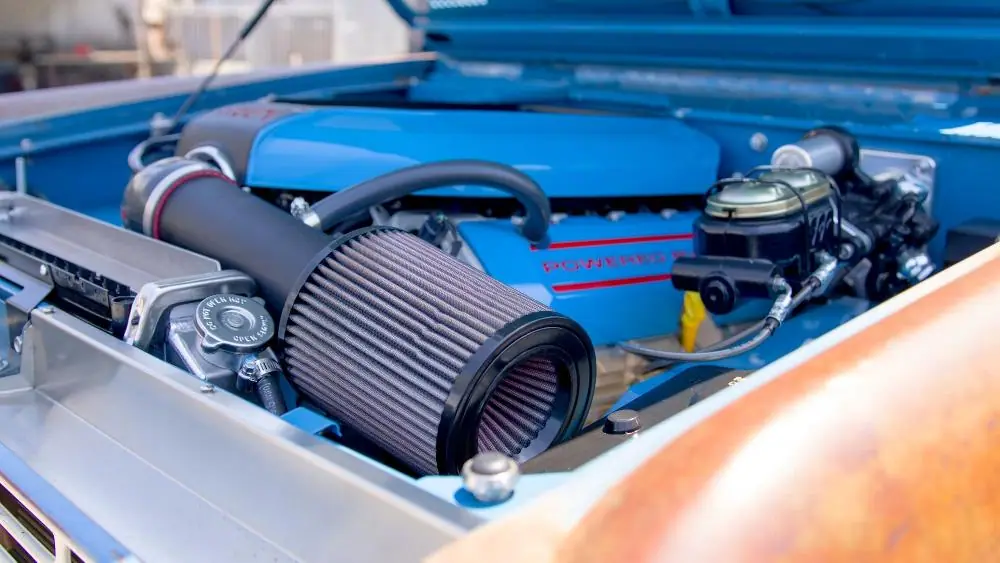
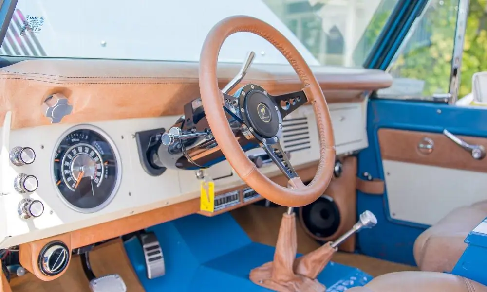
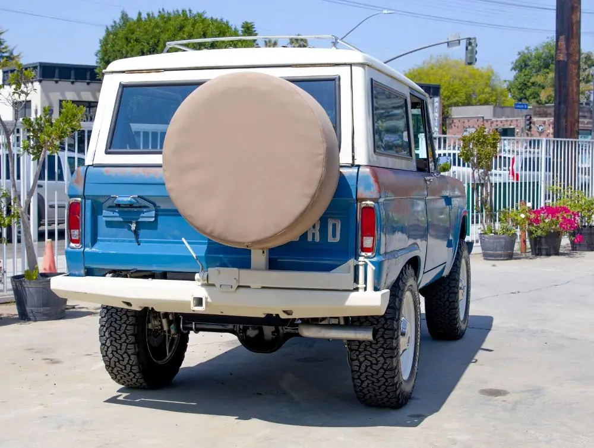
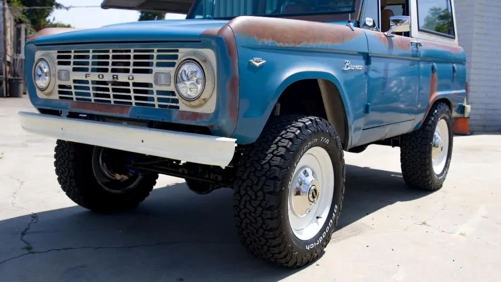
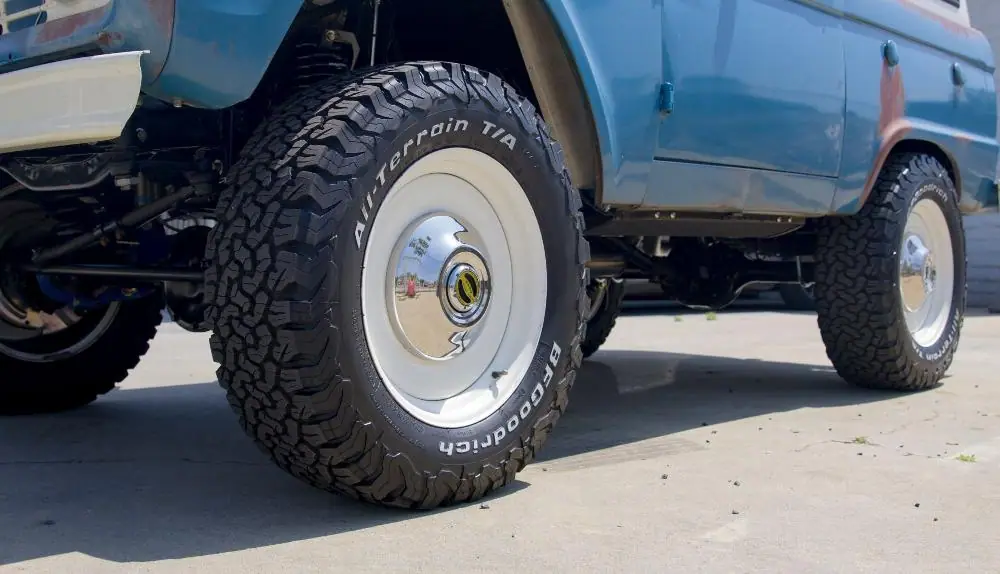

ASC Bronco 'Ol Blue
From Dakota Digital

Did you know that Ford’s other “pony” was almost named for a different farm animal? While the Mustang and Bronco were being drawn up on the chalk boards in the early 60’s, Ford almost called the Bronco the G.O.A.T. which was the acronym for Goes Over All Terrain. It’s also credited for being the first vehicle labelled as an SUV. Ford designers set out to make a vehicle that could go nearly anywhere and do nearly anything. Along with that, the Bronco accessory catalog had everything under the sun available for their new and now legendary vehicle. Snow plows, compass, front winch (PTO driven), and a hitch rated at 2,000 lb. towing capacity just to name a few. Available in 3 configurations, Roadster or topless for the beach bums, Sport Utility or half cab which had a steel roof and doors but open cargo area, and the Wagon which had the removable full roof which is the one we all probably remember the most. Base price around $2200 in 1966.
Artisan Automotive of Southern California (ASC) found this gem in Reno, Nevada. They gave it a ground up restoration except for one small area, the rock-solid body and original paint was left alone. Patina vehicles have come on strong the last few years, give your ride all kinds of modern upgrades, but leave the battle scars alone. Paint and body work is not cheap as many of you readers can attest too. I get the alure of a paint job that looks wet to the touch and as deep as the ocean, but many of our pocket books might not agree with this! Put the money someplace else, make it ride better, make it run stronger, give it air conditioning, there is a long list of places to spend money on any project. That’s exactly what ASC did with this pony, they gave it a dose of performance enhancements, Coyote crate 5.0, wads of suspension upgrades, lifted it to stuff some massive 18” wheels inside those fenders, shod them in 275/65/R18 BFG’s. While you can’t puddle a saddle on this Bronc, the interior is in a distressed brown leather to give it the patina treatment as well.
Housed in the dash to the left of the steering column is the direct fit RTX gauge system from Dakota Digital. Ford was nice enough back in the day to carry this same basic gauge over from the 1961-66 Ford trucks and stuff it into the Broncos and run it from 1966-77. Originally, they had a speedometer, fuel and engine temp gauge with some added warning lights. Our Engineers added on to that basic template with a tachometer, oil pressure and volt gauge. Plus, the big TFT digital screen for added info. All while keeping true to the Ford aesthetics from the 60’s. Whether you’re running a 5.0 Coyote or a smooth original 289, all the engine data is on display.
Ever had that conversation with friends or family and said “I wished I had never sold that”? Well, those $2200 Broncos are now highly desirable and have sky rocketed in price. But none of us ever thought about that when we are out trying to climb a tree with it or bury it in a mud slough. We just wanted to test the limits and see what it could or couldn’t do. After all, a man’s got to know his limitations.









Also on dakotadigital.com.